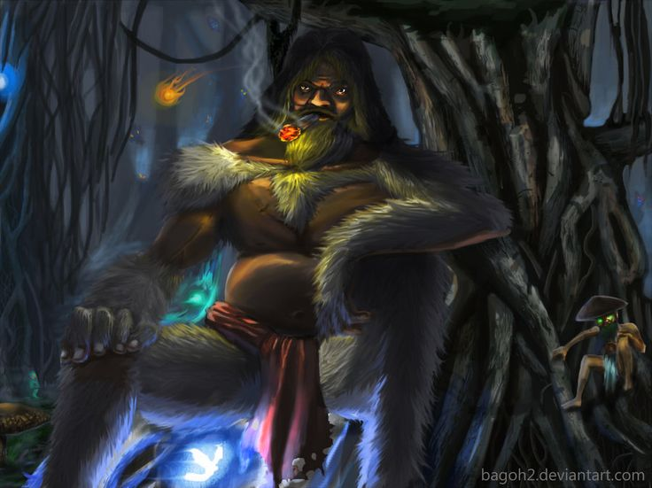

The Kapre lives in the tallest trees of the forest. Villagers whisper about his glowing cigar and giant silhouette. He observes travelers quietly from above, shrouded in smoke and mist.
One night, a brave hunter enters the forest. The Kapre notices his movements and steps from the shadows. His glowing eyes pierce the darkness, sending shivers down the hunter's spine. Respect and fear collide as they confront each other.
The hunter chooses respect over curiosity and bows to the Kapre. Slowly, the giant disappears into the mist, leaving only the faint glow of his cigar. The forest remains protected, and the legend lives on.